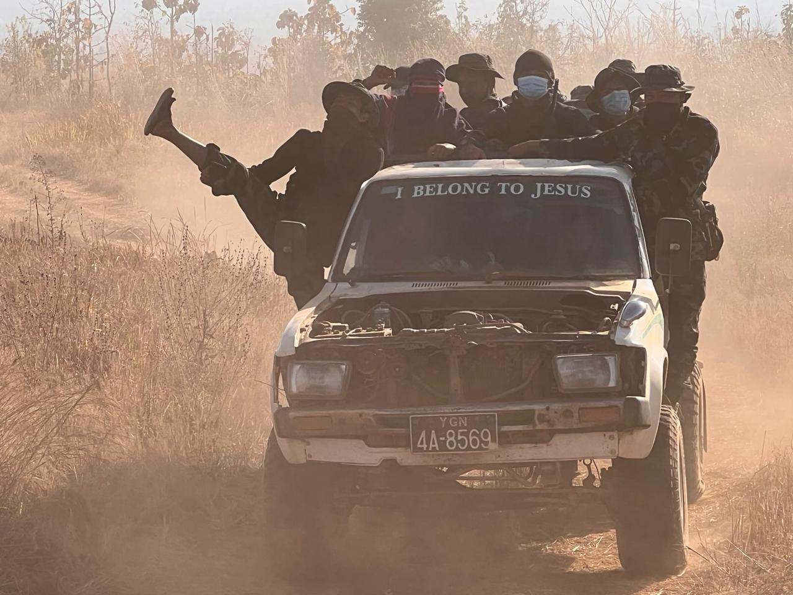

Men ride pressed together in the back of a battered pickup truck as it moves down a dusty road in Karenni State. Across the windshield, large letters read, “I BELONG TO JESUS.” The photo was taken during a humanitarian mission and captures more than transport alone. According to field testimony, the passengers were singing worship songs as they traveled through an area where fighting was still ongoing, turning the truck into a moving space of morale, fellowship, and faith under threat.
Humanitarian teams and local resistance groups in Myanmar often travel between internally displaced persons camps and frontline positions using improvised vehicles in dangerous conditions. Damaged roads, limited fuel, and the constant risk of attack make mobility itself part of survival. In that setting, shared religious practice is not separate from the mission. Faith and religion help sustain morale and reinforce social bonds during prolonged conflict.

Not Applicable.
Wartime imagery is often expected to show only devastation. This photograph complicates that expectation by recording fellowship, song, humor, and faith inside a dangerous journey. The damaged vehicle and active conflict remain present, yet so does collective joy.
Within the archive's larger themes, the image links resilience to movement, community, and belief rather than to abstraction. It preserves a moment where testimony of danger and testimony of hope coexist, reminding viewers that human meaning exceeds what automated systems can reliably infer from visual surfaces alone.